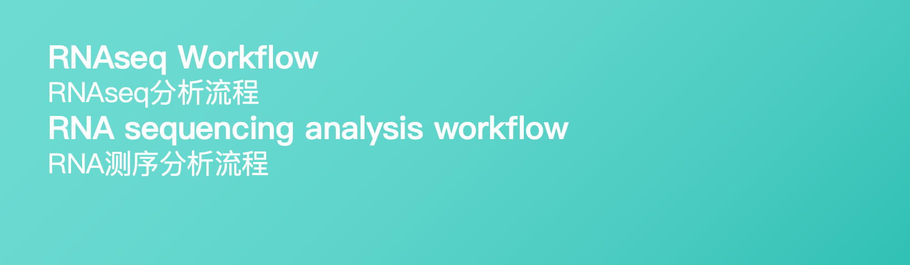

RNAseq Workflow Trigger
For RNA-seq analysis - RNA-seq分析工作流触发器
Input path (FASTQ files)
*
:
Reference genome path
*
:
Job name
*
:
Thread number
*
:
Run location
*
:
Specify the runner group (e.g. pipeline) / 指定运行器组(如 pipeline)
Secret key
*
:
Required for private repositories. Create token with "repo" scope at:
GitHub Token Settings
私有仓库必须提供Token，请创建具有"repo"权限的Token:
GitHub Token 创建页面
Run RNAseq Workflow / 运行RNAseq工作流
See Results / 查看结果